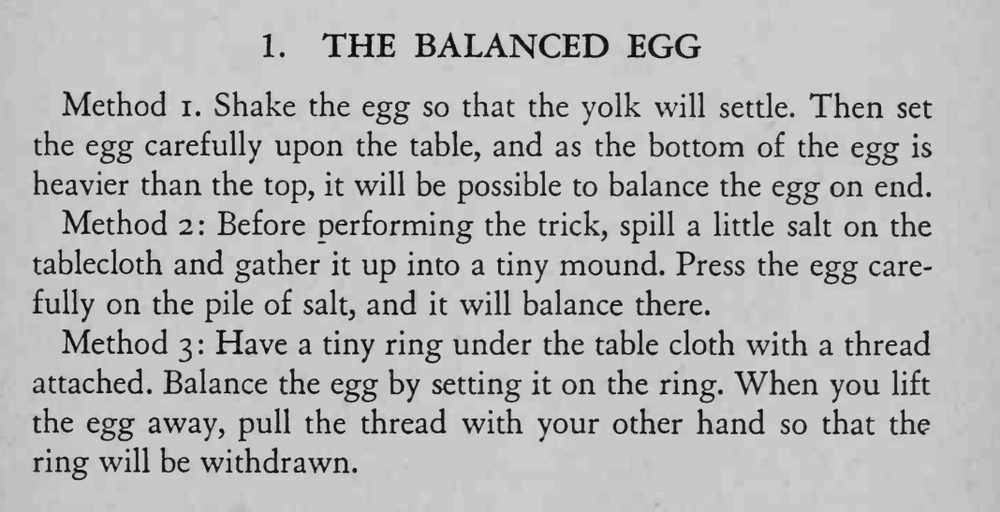

一枚鸡蛋在桌上笔直地立稳，怎么也不倒。
三种方法都要轻手轻脚；用盐堆最省事，演完记得把盐擦干净。

Method i. Shake the egg so that the yolk will settle. Then set the egg carefully upon the table, and as the bottom of the egg is heavier than the top, it will be possible to balance the egg on end. Method 2: Before performing the trick, spill a little salt on the tablecloth and gather it up into a tiny mound. Press the egg carefully on the pile of salt, and it will balance there. Method 3 Have a tiny ring under the table cloth with a thread attached. Balance the egg by setting it on the ring. When you lift the egg away, pull the thread with your other hand so that the ring will be withdrawn.